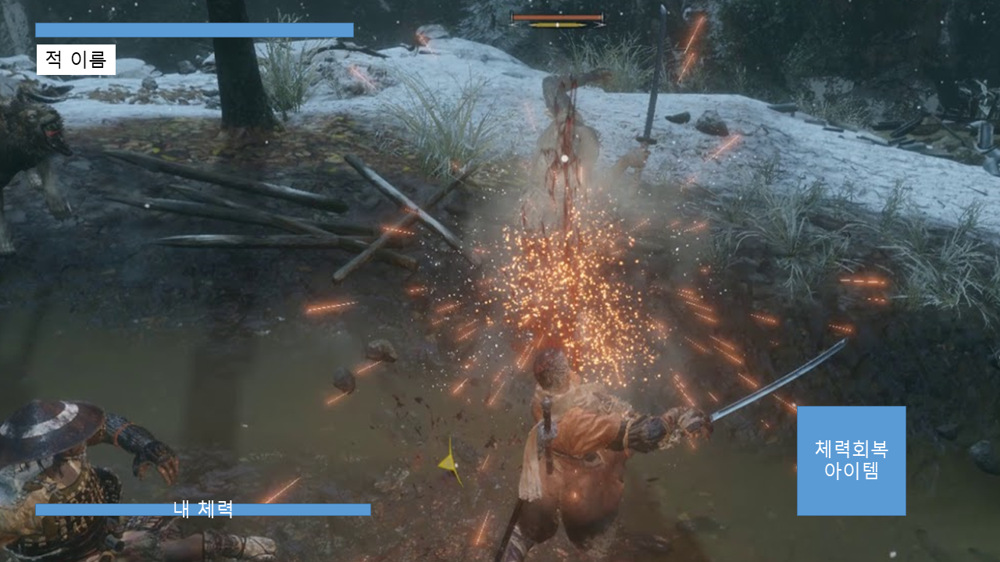
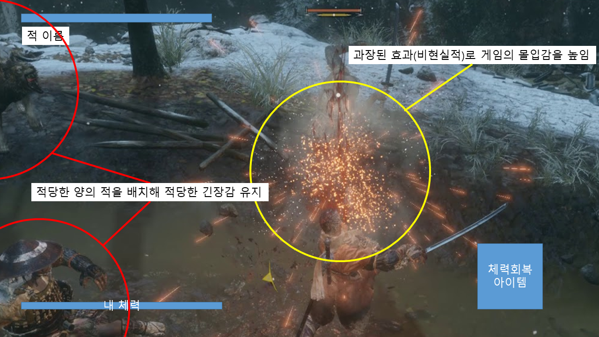
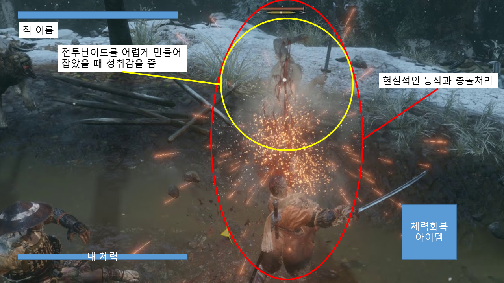
(UI) 몰입감, 현실성을 최대로 주지만, 게임하는데 불편하지 않도록, ui종류와 크기를 최소화하여 배치 (시점) 3인칭 시점으로 캐릭터의 어깨 뒤에 카메라가 배치됨 (전투) 적당한 수의 적을 배치해, 긴장감을 유지함. 전투의 난이도를 쉽지않게 만들어 성취감을 느끼게함. 현실적인 애니메이션과 충돌처리를 통해 현실성을 느낄수 있다. 과장된 효과로 재미를 극대화시킴
[도전 과제]
[재미 요소]
[만들게 된 배경]
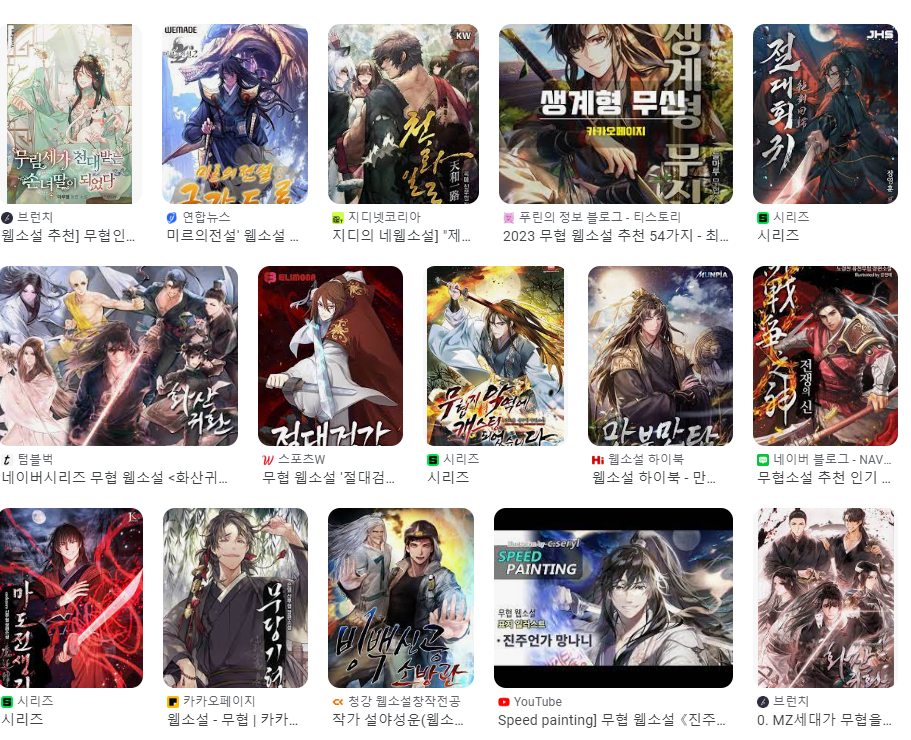
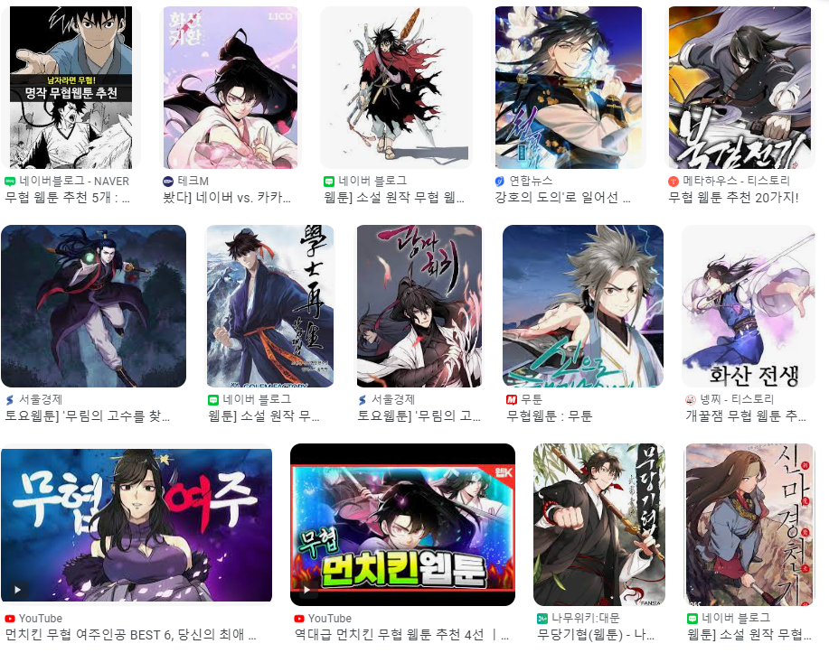
[참신함]
[카메라 관점]
[스토리]
[디자인]
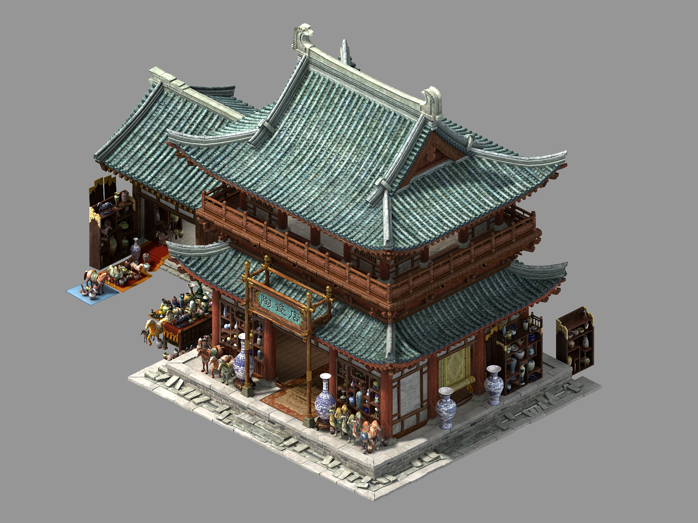
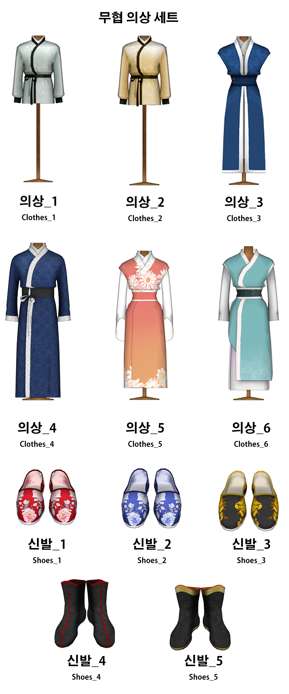
[컬러]
[음향]
약간의 긴장감을 주는 음악을 크지 않은 소리로 틀고, 효과음은 크게 출력되도록 함.
Unity 3D로 개발할 예정이며, 개발이 완료된 이후에는 웹 빌드하여 itch.io에 게시예정
| 연번 | 종류 | OBJ 이름 | Obj 영문명 | 사용처 | 오브젝트 이미지 |
|---|---|---|---|---|---|
| 1 | 플레이어 | 주인공 | player | 공통 |  |
| 2 | 적 | 일반인 | e_Easy | 1,2 스테이지 |  |
| 3 | 적 | 무림인 | e_Normal | 2,3 스테이지 |  |
| 4 | 적 | 마교인 | e_Hard | 4 스테이지 |  |
| 5 | 무기 | 검 | sword | 공통 |  |
| 6 | 아이템 | 회복 물약 | potion | 공통 |  |
| 7 | ui | 내 체력 | p_HpUI | 공통 |  |
| 8 | ui | 적 체력 | e_HpUI | 공통 | |
| 9 | ui | 적 이름 | e_NameUI | 공통 |  |
| 10 | ui | 회복 아이템 창 | potionUI | 공통 |  |
| 11 | 상호작용 오브젝트 | 포탈 | portal | 스테이지 이동 | 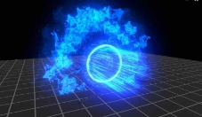 |
| 12 | 상호작용 오브젝트 | 편지 | letter | 스토리 진행 |  |
| 13 | 상호작용 오브젝트 | 울타리 | fence | 파괴 가능한 벽 |
1) 오브젝트 이름 : player
| 속성 | 영문명칭 | 설명 | 비고 |
|---|---|---|---|
| 최대체력 | maxHp | 플레이어의 체력이 가질 수 있는 최대치 | -int |
| 현재체력 | hp | 플레이어의 체력 | -int |
| 공격력 | dmg | 플레이어가 적에게 입히는 데미지 | +int |
| 이동속도 | moveSpeed | 플레이어가 이동하는 속도 | -float |
| 포션 개수 | potionCount | 현재 사용가능한 포션 개수 | -int |
| 포션 개수 ui | potionCountUI | 현재 사용가능한 포션 개수를 표시할 UI | -Text |
| 상태 | state | 플레이어의 동작 상태 (기본, 쳐내기, 피격, 사망) | +enum |
| 체력ui | hpBar | 플레이어의 체력을 표시할 ui | -Image |
| 기준위치 | spawnPoint | 부활시 플레이어를 생성할 위치 | Transform |
| 검 콜라이더 | weaponCollider | 무기의 콜라이더 | Collider |
2) 오브젝트 이름 : e_Easy, e_Normal, e_Hard
| 속성 | 영문명칭 | 설명 | 비고 |
|---|---|---|---|
| 체력 | hp | 적의 체력 | int |
| 공격력 | dmg | 적이 플레이어에게 입히는 데미지 | int |
| 이동속도 | moveSpeed | 적이 이동하는 속도 | float |
| 이름 | name | 적의 이름 | int |
| 대상 | target | 이동할 대상 적이 범위 내에 들어왔을 시 적, 범위를 벗어났을 때는 기본위치 | Transform |
| 기준위치 | spawnPoint | 적을 생성할 위치, 적이 없을 때, 돌아갈 위치 | Transform |
| 체력ui | hpBar | 적의 체력을 표시할 ui | Image |
| 이름ui | nameUI | 적의 이름을 표시할 ui | Text |
| 무기 콜라이더 | weaponCollider | 무기의 콜라이더 | Collider |
3) 오브젝트 이름 : portal
| 속성 | 영문명칭 | 설명 | 비고 |
|---|---|---|---|
| 출구포탈 | exit | 포탈에 충돌했을 때, 이동시켜줄 출구포탈 오브젝트 | gameObject |
4) 오브젝트 이름 : letter
| 속성 | 영문명칭 | 설명 | 비고 |
|---|---|---|---|
| 편지내용 | letter | 편지에 표시될 내용 | string |
| 편지배경 | letterCanvas | 편지 ui에 표시될 캔버스 | gameObject |
5) 오브젝트 이름 : potion
| 속성 | 영문명칭 | 설명 | 비고 |
|---|---|---|---|
| 포션이미지 | potionSprite | 포션ui에 표시될 이미지 | sprite |
| 포션회복량 | healAmount | 포션을 사용했을 때, 체력을 회복하는 정도(퍼센트 [0,1]) | float |
1) 오브젝트 이름 : player
| 행동 | 영문명칭 | 설명 |
|---|---|---|
| 이동 | Move | wasd로 입력을 받아 이동한다. shift를 누르면 이동속도가 증가한다. |
| 공격 | Attack | 무기의 콜라이더를 켜고 애니메이션을 출력 |
| 쳐내기 | Parry | 공격 쳐내기 플레이어가 쳐내기 기술을 사용해 쳐내기 애니메이션을 출력 0.3초 동안 쳐내기 상태가 됨쳐내기 상태에서 피격시:1. 플레이어의 피격 없음.2. 플레이어는 쳐내기 성공 애니메이션 출력3. 적은 공격 실패 애니메이션 출력4. 쳐내기 성공 이펙트, 사운드 출력쳐내기 기술을 사용했을 때, 쳐내기 애니메이션이 출력되는지 쳐내기 기술을 사용했을 때, 쳐내기 콜라이더가 생성되는지 쳐내기 기술 사용중일 때, 피격시 쳐내기 성공으로 이어지는지 쳐내기 기술 시간이 종료되었을 때, 쳐내기 콜라이더가 사라지는지 쳐내기 기술 시간이 종료되었을 때, 쳐내기 애니메이션이 종료되는지 쳐내기 효과가 종료되고 피격되었을 때는 기존의 피격효과와 동일한지 확인쳐내기 성공했을 때 이펙트,사운드 가 정상출력 되는지 확인 쳐내기 성공했을 때 플레이어의 hp가 감소되지 않는지 확인 쳐내기 성공했을 때 쳐내기 성공 애니메이션이 출력되는지 확인- 사운드는 배경음보다 크게(우선 순위가 높다)- 카운터 스킬 개념- 피격 시간은 Inspector에서 조절 가능- 쳐내기 상태 0.3초 동안 애니메이션이 존재하고 이동 불가(0.3초 포함 X)- 이미 피격이 된 공격에 대해서는 쳐내기가 안 된다.- 재사용 대기 시간 없다.- 쳐내기는 스킬 1회당 공격 1회를 막는다.- 모든 피격 판정에 대해 발동한다.- 데미지 없이 막는 스킬- 투사체를 막아낼 시 사라진다. 투사체 발사자는 공격 실패 판정을 갖지 않는다. |
| 피격 | Hit(int dmg) | 적의 공격에 충돌하였을 때 호출 플레이어의 hp를 적의 공격력만큼 감소시킨다. |
| 포션사용 | UsePotion() | 포션의 개수가 1개 이상이면,potion의 healAmount*maxHp만큼 체력을 더하고 potionCount의 개수를 1만큼 감소시키고. potionCountUI의 text를 업데이트한다. |
| 부활 | Revive() | spawnPoint위치로 플레이어를 부활시키고, 상태를 기본상태로 전환한다. 부활 애니메이션 을 출력한다. |
| 사망 | Die() | hp가 0이하가 되면 호출, 일정 시간 이후에 부활을 호출 |
2) 오브젝트 이름 : e_Easy, e_Normal, e_Hard
| 행동 | 영문명칭 | 설명 |
|---|---|---|
| 대상 찾기 | FindEnemy() | 길이가 정해진 ray를 플레이어 방향으로 발사 한다. 이 ray에 플레이어가 맞으면 target에 플레이어가 들어간다. 없으면 spawnpoint와 일정거리내의 위치가 저장된다. |
| 이동 | Move (Transform target) | target위치로 이동한다. |
| 공격 | Attack | 적이 공격사거리 안으로 들어오면, 대상을 바 라보고 공격애니메이션을 실행, 무기의 콜라이 더를 켜준다. 공격이 종료될 때 까지 이동과 회전이 불가능하다. |
| 피격 | Hit(int dmg) | 플레이어의 공격에 충돌하였을 때 호출 자신의 hp를 플레이어의 공격력만큼 감소시킨다. |
| 사망 | Die() | hp가 0이하가 되면 호출, 일정 시간 이후에 부활을 호출 |
| 부활 | Revive() | spawnPoint위치로 플레이어를 부활시키고, 상태를 기본상태로 전환한다. 부활 애니메이션 을 출력한다. |
3) 오브젝트 이름 : portal
| 행동 | 영문명칭 | 설명 |
|---|---|---|
| 포탈 이동 | OnCollisionEnter | collision이 플레이어면,exit의 position으로 이동시킨다. |
4) 오브젝트 이름 : potion
| 행동 | 영문명칭 | 설명 |
|---|---|---|
| 포션 사용 | UsePotion() | 키 입력시 player의 hp를 수치만큼 증가시킨 다 |
1) 오브젝트 이름 : player
| 현상태 | 전이상태 | 전이조건 |
|---|---|---|
| 기본 | 쳐내기 | 쳐내기 키에 해당하는 입력시 |
| 쳐내기 | 기본 | 쳐내기 시간 종료시 |
| 기본 | 사망 | hp가 0이하가 되면 전이 |
| 사망 | 기본 | 사망하고 일정 시간 이후 전이 |
| 속성 | 영문명칭 | 설명 | 비고 |
|---|---|---|---|
| 최대체력 | maxHp | 플레이어의 체력이 가질 수 있는 최대치 | -int |
| 현재체력 | hp | 플레이어의 체력 | -int |
| 공격력 | dmg | 플레이어가 적에게 입히는 데미지 | +int |
| 이동속도 | moveSpeed | 플레이어가 이동하는 속도 | -float |
| 포션 개수 | potionCount | 현재 사용가능한 포션 개수 | -int |
| 상태 | state | 플레이어의 동작 상태 (기본, 쳐내기, 피격, 사망) | +enum |
| 기준위치 | spawnPoint | 부활시 플레이어를 생성할 위치 | Transform |
1) 핵심 규칙
플레이어는 기본적으로 1,2,3,4스테이지 순서로 진행
스테이지 완료 조건은 각 스테이지에 수문장 적을 죽이고 포탈에 들어가면 완료로 판정 승리조건(엔딩)은 모든 스테이지를 완료
스테이지를 시작하면 정해진 위치에 모든 적이 생성됨
적을 죽이고 일정 시간이 지나면 적이 spawnpoint에 다시 생성됨
공격할 때만 공격충돌판정이 있음.
마우스 좌클릭하면 공격을 할 수 있다.
공격이 적에게 충돌 시 플레이어의 데미지만큼 적의 hp를 감소시킨다.
플레이어/적은 hp가 0 이하가 되면 사망한다.
플레이어가 사망할시 일정 시간 이후에 부활(씬 재시작)
마우스 우클릭을 하면 쳐내기 상태가 된다.
쳐내기 상태에서는 우클릭을 입력해도 쳐내기 상태가 시작되거나, 시간이 연장되지 않는다.
2) 보조 규칙
파괴가 가능한 울타리를 일정 횟수 공격할 시 파괴된다.
공격 성공 시 데미지 계산 피격된오브젝트의hp -= 공격한오브젝트의공격력 달리기속도 제한
달리기할 때 이동속도< 3*기본 이동속도
메인화면, 게임화면, 엔딩화면이 있다. 게임화면은 스테이지1,2,3,4로 나뉜다. 메인화면에는 게임시작, 게임종료 버튼이 있다. 게임시작 클릭시 스테이지1로 이동한다. 카메라는 플레이어 등 뒤에 위치 게임화면에는 적 이름, 적 HP, 플레이어 HP, 포션개수 가 표시된다. 게임화면 중앙에는 플레이어의 모습이 3인칭으로 보여진다. 각 스테이지에는 수문장몬스터, 포탈이 무조건 존재한다. 수문장 몬스터를 물리치면 포탈이 생성된다. 포탈에 들어가면 다음스테이지로 넘어간다. 마지막 스테이지에서 수문장 몬스터를 물리치면 엔딩화면으로 이동한다. 이동은 WASD, 화면회전은 마우스, 공격은 좌클릭, 쳐내기는 우클릭 으로 설정한다. 플레이어 사망시 해당 스테이지를 재시작한다. 게임종료는 플레이어가 게임종료버튼을 눌렀을 때만 가능하다. 만약 클리어 기록이 있다면 해당스테이지까지 선택이 가능하다. -캐릭터 : 이동, 공격, 쳐내기, 피격, 사망, 부활, 카메라회전 구현, 포션 사용 -적 : 이동, 공격, 플레이어 인식, 사망, 생성 구현 -UI : 적체력UI, 적이름UI, 플레이어hpUI, 화면회전/이동설명서, 달리기설명서, 전투설명서, 편지창UI, 포션UI -오브젝트 : 편지(충돌시 편지UI출력), 포탈(충돌시 스테이지 클리어), 파괴 가능 울타리(3번 피격시 파괴 구현) -시스템 : 스테이지 클리어시 저장 구현
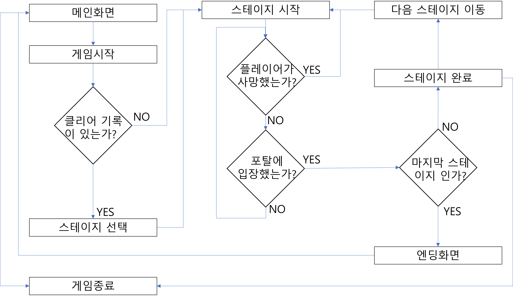
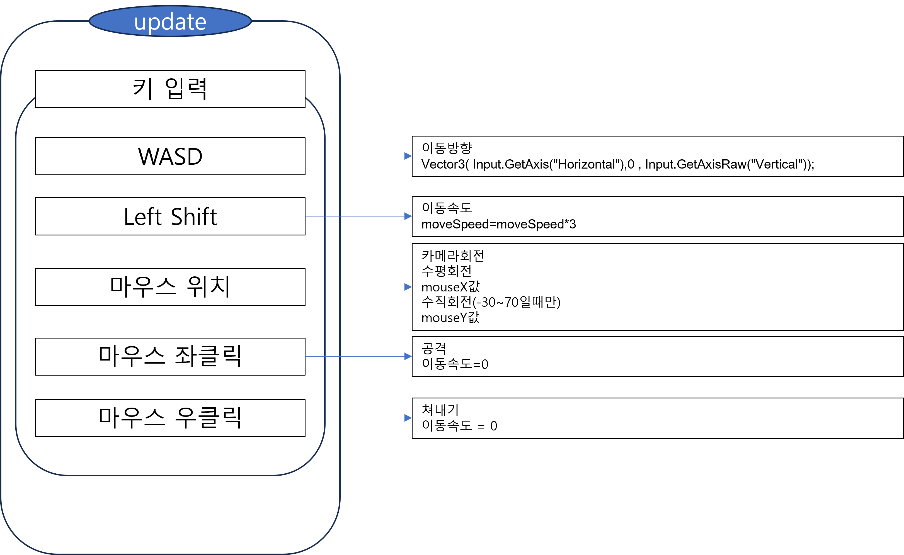
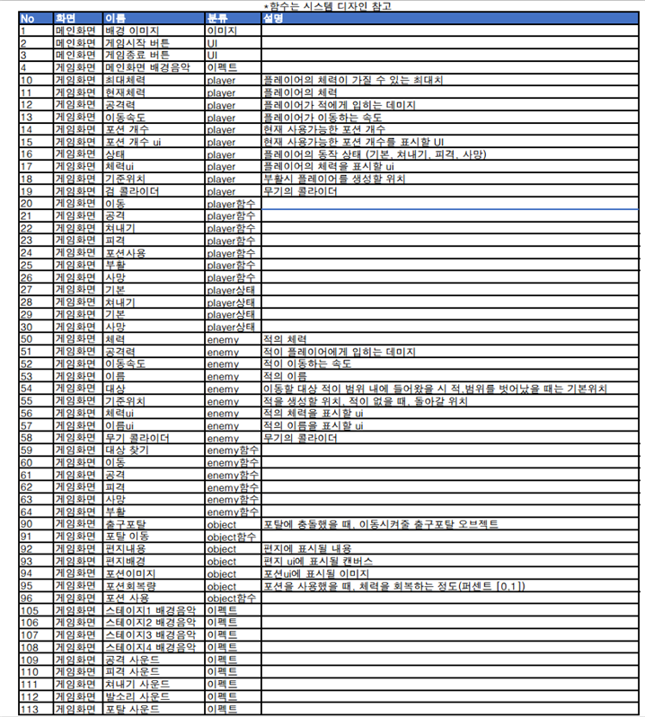